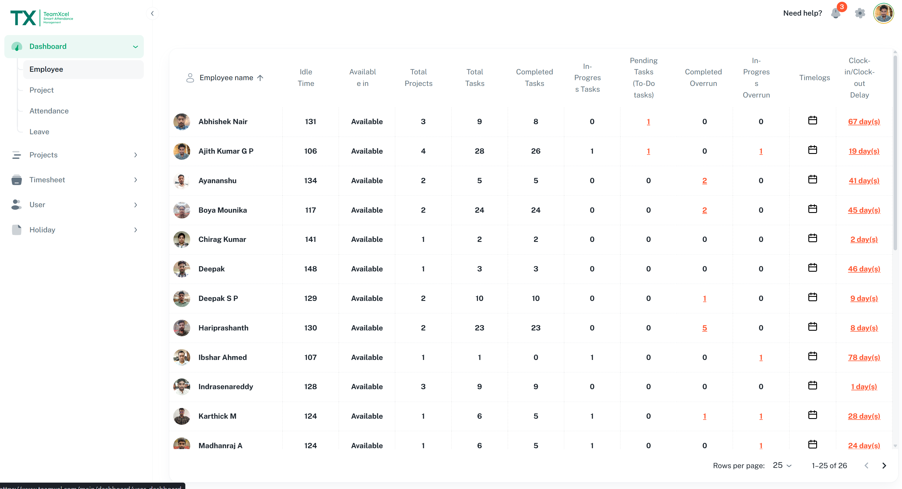
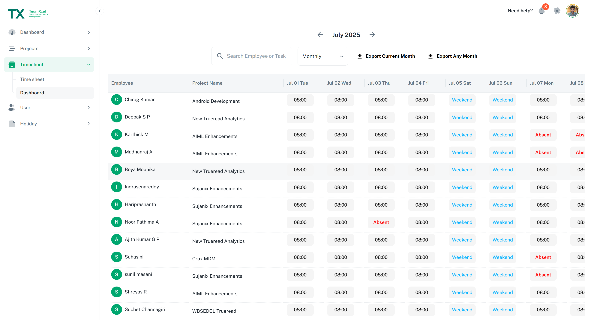
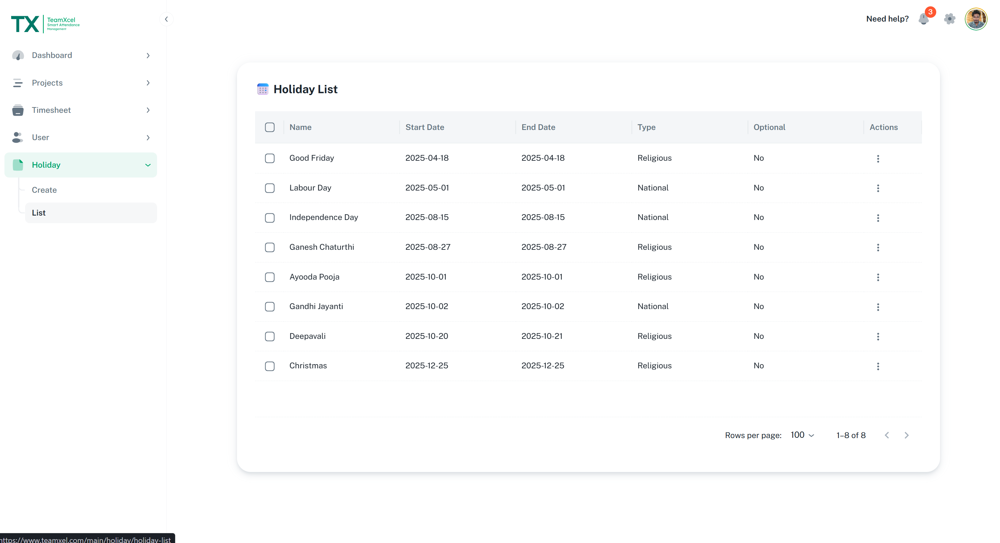
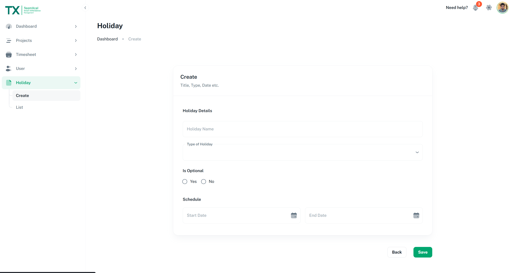
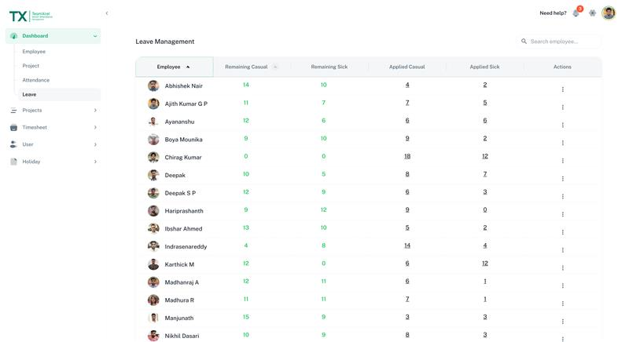
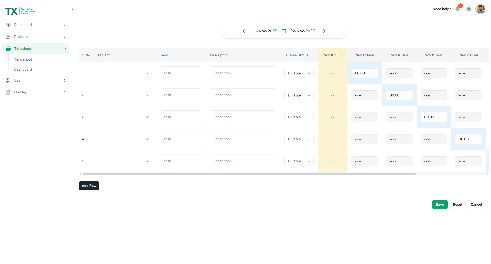

TeamXel
Overview
TeamXel (Project Management Tool) is a client-focused project management platform developed during my tenure at IBM to improve team collaboration,
streamline task tracking, timesheets and Agile sprint planning. The platform centralizes project operations, providing
managers and teams with actionable insights and automated reporting.
Impactful contributions
- Built core backend features including task tracking, timesheets, employee management, and Agile sprint planning.
- Developed secure and scalable RESTful APIs using Python & Flask to support real-time updates and seamless frontend interaction.
- Designed optimized data models for tasks, sprints, and employee workflows to ensure high performance under load.
- Implemented role-based access control, endpoint security, and robust data validation across the platform.
- Automated tracking and reporting workflows, significantly reducing manual effort and improving client productivity.
Tech stack
- Core: Python, Flask
- Backend: PostgreSQL
- Deployment: AWS
- Frontend: ReactJS (integrated with the REST API)
How I worked
- Authored RESTful endpoints and API contracts consumed by the frontend team for dynamic UI updates.
- Collaborated with frontend engineers & QA to ensure smooth releases and reliable data flows.
Screenshots & demo





